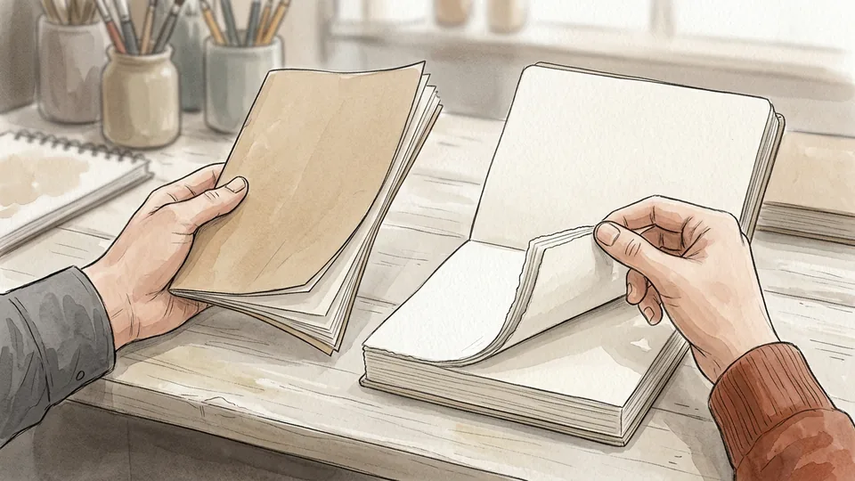
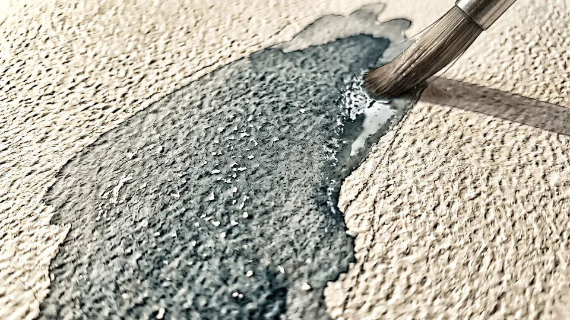
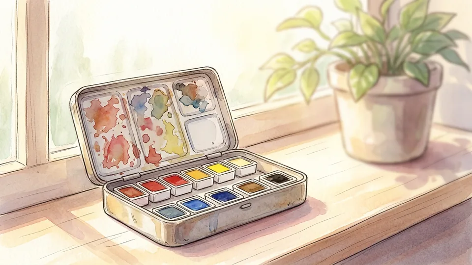
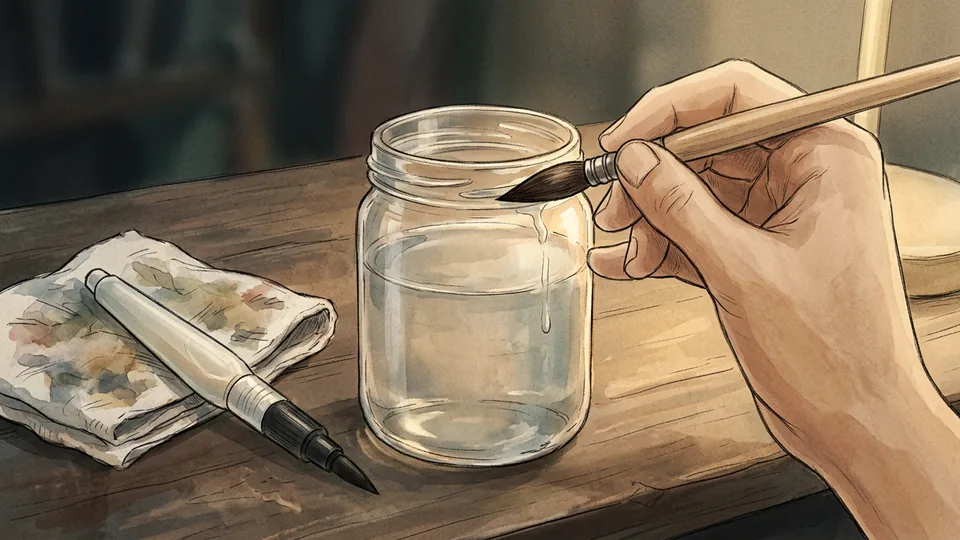
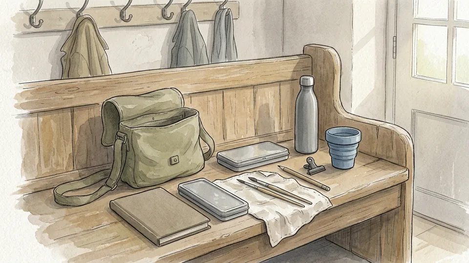
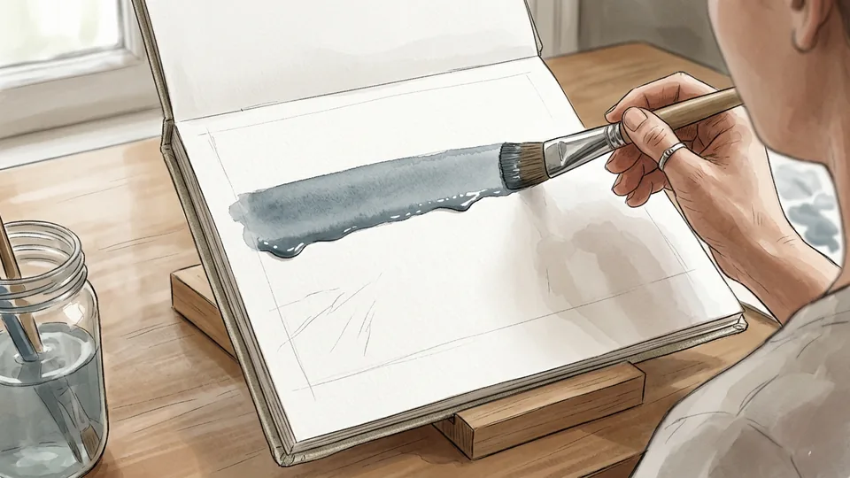
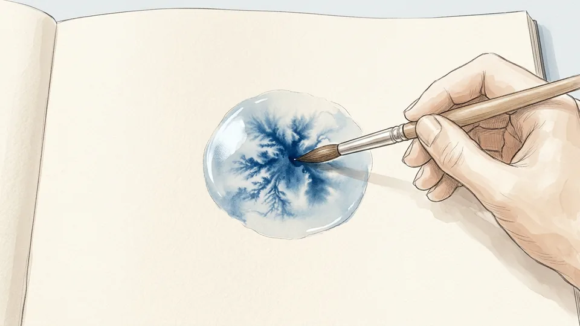
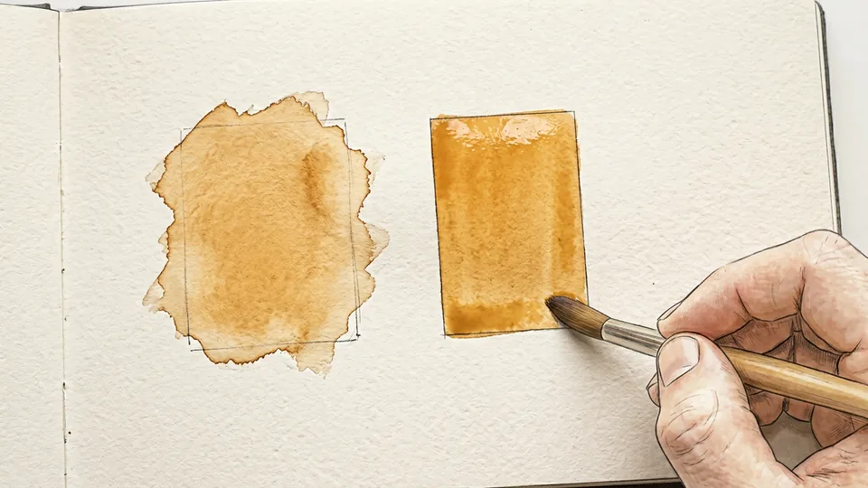
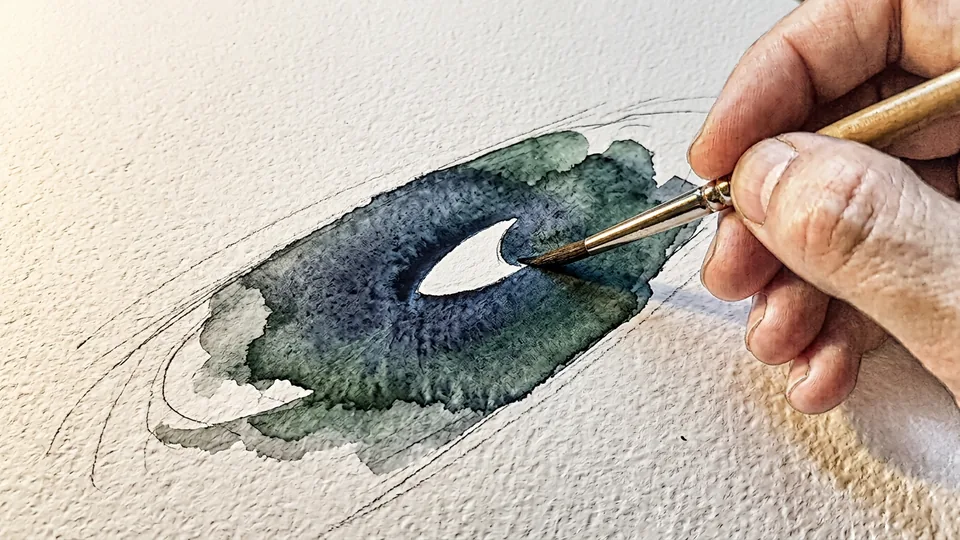

A watercolor sketchbook is not a portfolio. It is a place to practise where nothing has to be finished, which is exactly why it works: the pages are cheap, the sessions are short, and nobody has to see them. The usual reason people stop is not talent but friction. The paper buckles because it was too thin, the kit is too heavy to carry, the first wash dries into a hard line and the book goes in a drawer. This guide fixes those failures in order. It covers choosing paper and a palette small enough to travel, learning the four marks that most watercolor actually consists of, building a fifteen-minute habit, and storing the finished book so the colors survive longer than your interest in them.
Part 1 of 3
Choose a Kit Small Enough to Carry

Step 1 of 15
Buy paper heavy enough for water
The single biggest cause of early disappointment is thin paper. Ordinary drawing paper cockles the moment a wet wash lands on it. Look for a sketchbook whose pages are made for watercolor, usually around 300 gsm, and ideally cotton or part cotton. Heavier paper takes water without buckling, lets you lift colour back off, and survives a second layer. A small book of good paper beats a large book of bad paper every time.
Tip: Open the book in the shop and flex a page. Watercolor paper feels stiff and slightly furry rather than slick.

Step 2 of 15
Pick a surface texture and stay with it
Watercolor paper comes smooth, lightly textured or rough. Smooth suits fine detail and pen work; the middle texture, often called cold press, is the usual all-rounder; rough breaks the brushstroke up and suits skies and foliage. None is better than the others, but changing constantly makes it impossible to learn what your paint does. Choose the middle texture first, fill one book with it, then try another surface if you want to.
Tip: Paint a small swatch on the first page and let it dry. That square tells you how fast this paper takes colour.

Step 3 of 15
Keep the palette to a handful of colors
Beginners buy forty colours and use six. A small tin of pans with a warm and a cool version of each primary, plus one earth colour, will mix almost anything you meet outdoors, and mixing is how colour sense is built. Pans are easier to carry than tubes and need no squeezing with cold hands. Buy artist-grade if you can afford a few pans rather than student-grade if you can afford many.
Tip: Leave one empty well in the tin. You need somewhere to mix that is not the lid.

Step 4 of 15
Two brushes are enough to start
One medium round brush that comes to a point will do nine tenths of the work, because the belly holds water for washes and the tip draws a thin line. Add a water brush, the kind with a squeezable reservoir in the handle, for painting on trains and benches where a jar is impractical. Test a round brush by wetting it and flicking it once; if the tip splits or curls, it will fight you on every edge.
Tip: Never leave a brush standing in water. The hairs bend permanently and the handle swells and cracks.

Step 5 of 15
Build one bag you can grab without thinking
Put the book, tin, two brushes, a pencil, a cloth, a small water bottle and a collapsible cup in one bag and leave it by the door. A clip for holding pages down in wind is worth more than most accessories. The kit should be light enough that taking it costs you nothing, because every gram you add is a reason to leave it at home on the day you would otherwise have painted.
Tip: An old sock makes a good brush case and stops the tips being crushed in the bag.
Part 2 of 3
Learn Four Marks Before You Paint a Subject

Step 6 of 15
Lay a flat wash on a tilted page
Prop the book at a slight angle, load the brush fully, and draw one horizontal band across the top. A bead of wet paint will gather along the bottom edge; pick it up with the next stroke and carry it down the page. Work quickly and do not go back into a band that has started to set. A wash that dries evenly is the foundation of skies, walls and water, and it is mostly about keeping that bead moving.
Tip: Mix twice as much paint as you think the area needs. Running out halfway is what causes the hard line across the middle.

Step 7 of 15
Drop colour into wet paper
Wet an area with clean water until it shines, then touch a loaded brush into it and watch the pigment spread on its own. This is the wet-on-wet technique, and it gives the soft bleeding edges that make watercolor look like watercolor: clouds, distant trees, shadow under a wall. You steer it by how wet the paper is and how much pigment you load, not by brushing it about. The less you interfere, the better it behaves.
Tip: If the shine has gone off the paper, it is too dry for this and you will get a hard-edged bloom instead.

Step 8 of 15
Paint the same shape on dry paper
Now let the page dry completely and paint the same shape again. Wet-on-dry gives a crisp edge, which is what reads as a building, a branch or a window. Most pages need both: soft edges where things recede, hard edges where you want the eye to stop. Painting the two versions side by side on one page teaches the difference faster than any amount of reading about it.
Tip: Keep the two swatches in your book and date them. They become your own reference for what this paper does.

Step 9 of 15
Leave the paper white instead of painting white
Watercolor is semi-transparent, so the white of the paper is what gives a painting its light. Highlights are usually not painted on; they are the parts you deliberately leave unpainted. Before you start, decide which three or four small areas will stay bare, then paint around them. This feels awkward at first and it is the habit that most quickly makes a page look like a watercolor rather than a coloured-in drawing.
Tip: Squint at the subject. The spots that survive squinting are the highlights worth saving.
generate in next batch → images/raw/10-*.png
Step 10 of 15
Wait for each layer to dry
Most spoiled pages are spoiled by impatience. A second wash laid onto a half-dry first one lifts the colour underneath and leaves a cauliflower-shaped bloom. Touch the back of a finger to the page: if it feels cool, water is still evaporating and the page is not ready. Use the waiting time to mix the next colour, sharpen the pencil or start a second small study on the facing page.
Tip: Warm air speeds this up, but do not dry pages on a radiator. Fast uneven drying buckles the sheet.
Part 3 of 3
Build the Habit and Keep the Book Safe
generate in next batch → images/raw/11-*.png
Step 11 of 15
Paint for fifteen minutes, not for a masterpiece
Set a small target: one subject, fifteen minutes, one page. Short sessions beat occasional long ones because they are easy to start and they leave you wanting to continue. Paint what is in front of you rather than planning something worthy: a mug, a window ledge, the corner of a room. A book filled with fifty quick studies teaches far more than three careful paintings and a hundred blank pages.
Tip: Start on page five. Nobody paints well on page one, and ruining it stops a lot of people.
generate in next batch → images/raw/12-*.png
Step 12 of 15
Take the book outside
Outdoors is where sketchbooks earn their keep, and it needs only a little planning. Sit in shade so the page is not dazzling and the wash does not dry before you can move it, clip the pages against wind, and keep the water where you cannot kick it over. Work small outside; a half page finished beats a full page abandoned when the light changes or it starts to rain.
Tip: Face away from the sun and your own shadow will not fall across the page.
generate in next batch → images/raw/13-*.png
Step 13 of 15
Write the notes in pencil, not ink
Add the date, the place and the weather in a corner of each page. The notes turn a pile of studies into a record you can learn from, because you can see what you painted in flat light and what you painted in sun. Conservation guidance for works on paper is to use pencil rather than ink for any inscription, and to write only when the paper is on a hard surface so the writing is not embossed through.
Tip: Note the colours you mixed as well. In six months you will want to know how you got that grey.
generate in next batch → images/raw/14-*.png
Step 14 of 15
Keep hands and page clean
Handle the book with clean, dry hands and keep food and drink away from it, which is standard practice for anything on paper. Grease from fingers and splashes of coffee are permanent in a way that a bad painting is not. Let a page dry completely before closing the book, dry your hands on a cloth kept for the purpose, and avoid tape, rubber bands and paper clips, all of which mark and tear paper over time.
Tip: Keep the mug behind the book rather than beside it, so a knocked elbow spills away from the page.
generate in next batch → images/raw/15-*.png
Step 15 of 15
Store the finished book cool, dry and out of the light
Watercolor pigments fade, and paper yellows and becomes brittle. Store finished books somewhere cool and relatively dry, around thirty-five percent relative humidity, away from radiators and vents, and out of direct or intense light. Avoid attics and basements, where leaks and swings in temperature do the damage. If you want to keep a page for decades, an acid-free folder or box is a cheap insurance policy.
Tip: Photograph each finished book before you shelve it. The photographs are what you will actually look at.
Tips
- Fill one book completely before buying another.
- Mix more paint than you think you need; running out mid-wash is what creates hard lines.
- Two brushes and eight colours will carry you much further than a large set.
- Date every page. The order is what shows you the progress.
- Keep the bag packed so that going out to paint takes no preparation.
Warnings
- Do not leave pages drying on a radiator or in strong direct sun; fast uneven drying cockles the paper and can crack heavy paint.
- Keep paint, water and solvents away from food, and away from small children and pets.
- Never use self-adhesive tape, rubber bands or paper clips to hold pages; they stain, dent and tear paper permanently.
- If a sketchbook has real value to you, a paper conservator should advise on repairs rather than a home remedy.
Community Q&A
What paper weight should a watercolor sketchbook be?+
Around 300 gsm is the usual choice for a book that will take wet washes without buckling, and cotton or part-cotton paper handles water better than wood pulp. Lighter paper can work for quick, dry-ish sketching with a water brush, but it will cockle under a full wash. If you only remember one thing when buying, check that the book is described as watercolor paper rather than drawing or mixed-media paper.
How many colors do I actually need?+
Six to eight pans are plenty: a warm and a cool version of red, yellow and blue, plus an earth colour and perhaps one dark. Everything else is mixed. A small palette forces you to learn mixing, keeps the kit light, and makes a sketchbook look coherent because the same colours reappear on every page. Add colours later only when you repeatedly fail to mix something you need.
Why does my wash dry with a hard line across it?+
Usually because the bead of wet paint at the bottom of the stroke was allowed to stop. If you pause, run out of mixed paint, or go back into an area that has begun to set, the edge dries as a line. Mix plenty of paint first, tilt the book slightly so the bead runs downwards, work fast across the whole band, and leave it alone while it dries.
How should I store finished sketchbooks?+
Somewhere cool, relatively dry, clean and stable, around thirty-five percent relative humidity, away from radiators, vents and direct light. Attics and basements are poor choices because of leaks and large swings in temperature and humidity. Acid-free folders or boxes protect individual pages and keep acidic papers from affecting their neighbours. Watercolour is light-sensitive, so display copies rather than originals if you want them on a wall.
References
- Tate. Watercolour, Art Terms. https://www.tate.org.uk/art/art-terms/w/watercolour
- Library of Congress, Preservation. Care, Handling, and Storage of Works on Paper. https://www.loc.gov/preservation/care/paper.html
- Canadian Conservation Institute. Caring for Paper Objects, Preventive Conservation Guidelines for Collections. https://www.canada.ca/en/conservation-institute/services/preventive-conservation/guidelines-collections/paper-objects.html